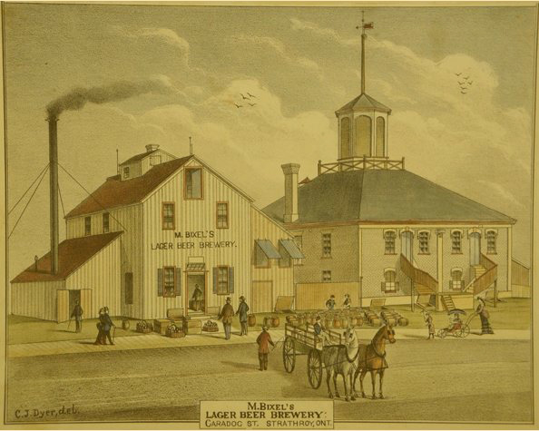

Welcome To Strathroy Brewing Company

OUR HISTORY
In 1812, the sound of muskets and canons filled the air and Canadians answered the call to arms on our battlefields. The strong Canadian spirit prevailed, protecting our lands from invasion and restoring peace with our American neighbours in 1815. Thankfully, this peace has endured on our land for nearly 200 years and this calls for a celebration.
Today, history seems to repeat itself, but the fight seems to have moved from the battlefield into the boardroom. Across the nation we see the boardrooms are increasingly empty and this puts manufacturing plants at risk of being shuttered. In the beer industry, the 3 largest brewing companies have already lost the battle for the boardroom and ever since 2006 even the beer store is under foreign ownership and control for the first time since its founding in 1927.
Today not one of the top 10 brands in Ontario’s beer stores is brewed by a Canadian owned and controlled brewery and I think it’s time for change. Please enjoy the timeline and help our cause by supporting your local brewery.
1836: Strathroy Flour Mills started in 1836 when John Buchanan built a grist mill to meet the growing demand of the settlers. Eventually Richard Pincombe bought it in 1862 and this family tradition of flour milling would be continued by three generations of Pincombe.

1870: Located at the corners of Front and Caradoc Streets and originally named Western Steam Brewery to incorporate the great watchword of the age “steam”. Steam revolutionized how breweries were designed, powered and operated and in Victorian Canada, a steam brewery was on that possess the latest technology – a steam heated kettle. Matthew Bixel purchased the business in 1875 and perceiving the trend toward lager became the first lager brewer in Western Ontario.
1877: In 1877 an astonished London Free Press reported on the Strathroy brewer’s success: “Lager beer is the popular beverage in London this summer. Nearly all the best houses [taverns and saloons] in the city run it, and Bixel’s Strathroy Lager is becoming quite a household word.”

1930s:Strathroy Flour Mills – Owned by R.M Pincombe & Sons.

1970: In the days when it was trendy to diversify, John Labatt Ltd. looked outside of the brewing business and bought Ogilvie Mills Ltd. in 1968 and subsequently bought Strathroy Flour Mills in 1970.

1993: In the days when it was trendy to divest non-core businesses, John Labatt Ltd. reached an agreement with the world’s largest flour milling company, Archer Daniels-Midland Co. of Decatur, Illinois to sell off the Ogilvie flour milling division. Ogilvie owned plants in Montreal, Midland, Strathroy and Medicine Hat. The company had 925 employees at the time of sale.

May 2012: For over one century this site proudly handled and milled the wheat that may have been in your bread, pancakes or even wedding cakes. Today Strathroy Brewing Company is proud to continue this tradition and restore the site to brew world class beer.